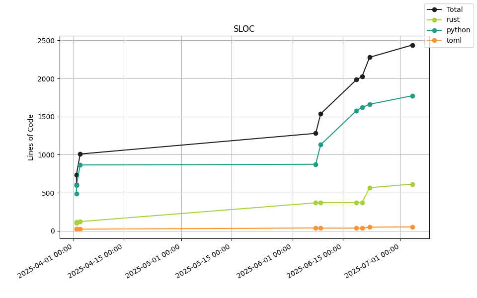

Join historic disasters as emergency response personnel and hone your crisis-solving skills while saving the world!
While you're there, tell the developer to get his butt in gear and make sure this project gets halfway done!
Built at 2025-07-04 10:10Windows x64 MacOS x64 MacOS ARM Linux x64
See the code!

During development windows x64 binaries will be signed using a self-signed certificate;
in order to trust this system you will have to manually install this certificate as a Root Certificate Authority
on your machine.
THIS IS AN INSECURE DECISION!
The development Root Certificate Authority may be downloaded here.